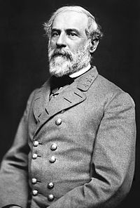
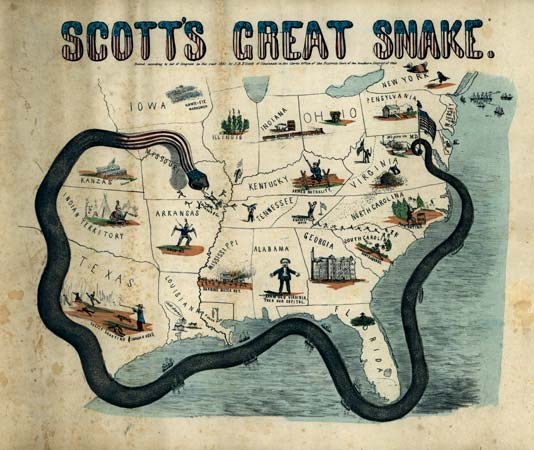

|
Tactics is concerned with deploying troops effectively at
a local level, while strategy involves thinking more
broadly. Military theorist Karl von Clausewitz provided a
famous definition of the distinction between the two
concerns: "Tactics is the art of using troops in battle;
strategy is the art of using battles to win the war."
Civil War Era Tactics
The tactics used by both the Confederacy and the Union
tended to be similar. Early in the Civil War, most generals'
approach to battle mirrored that of the French general
Napoleon Bonaparte. Napoleonic tactics were oriented towards
offense and dramatic victories. The hallmark of Napoleonic
warfare was the massed infantry assault, where troops would
advance within range of the enemy, fire a volley, and then
charge forth with bayonets to finish the job.
Napoleonic tactics were effective in the time of
Napoleon, as some Civil War generals had undoubtedly learned
from reading the influential works of Antoine-Henri de
Jomini. The tactics had also worked during the Mexican War,
where most of the army commanders of the Civil War saw their
first military service. However, in the 1850s, most of the
world's armies, including the army of the United States,

By the time of the Civil War, technological
advances had rendered the Napoleonic-era massed infantry assault
obsolete. When the tactic was used, as in the case of
Pickett's Charge during the Battle of Gettysburg, the results
were usually disastrous.
|
began to use rifles. Rifles could fire bullets accurately at
a range of 500 yards, compared to the 75-yard range of the
smoothbore muskets used in Napoleon's time. For the military
leaders of the United States, it was not immediately clear
what the implications of longer-range weapons would be. In
1855, the army issued a new tactical manual, Rifle and
Light Infantry Tactics, by William J. Hardee. Hardee's
answer to the adoption of the rifle, in essence, was to keep
using Napoleonic tactics, but to go faster when doing so.
When the Civil War got underway, it was soon clear that
the impact of rifles was going to be more substantial than
anyone had anticipated. The massed infantry assault was
clearly obsolete. When firing cannot begin until a range of
75 yards, only one volley can be gotten off before
hand-to-hand combat begins. Charging infantry can reach
their target with their ranks relatively intact. When firing
begins at a range of 500 yards, on the other hand, three or
four volleys can be fired before the infantry reaches its
target. Under such circumstances, soldiers attempting a
frontal assault are almost certain to be slaughtered.
The advent of the rifle had other implications as well.
Cavalrymen and their horses presented easy targets for men
armed with rifles. As such, cavalry was relegated to a
largely supporting role during the Civil Was--protecting the
flanks of their armies, scouting out troop locations, and
pursuing defeated enemies. Rifles also reduced the role of
artillery. In Napoleon's era, cannon would have been located
along the front lines of battles. During the Civil War, the
ability to pick off artillerymen with rifles necessitated
their removal to the rear of the battle. This relegated
artillery to a largely defensive role in most engagements.
Despite the shortcomings of the massed infantry assault,
Napoleonic tactics were not entirely discarded during the
Civil War. Indeed, the most famous tactical maneuver of the
war, Pickett's Charge at Gettysburg, was a massed infantry
assault. However, commanders preferred to use infantry
charges as a last resort. Their favored alternative was the
turning maneuver. This tactic was taught at West Point, and
had been used to great effect during the Mexican War by
General Winfield Scott. In a turning maneuver, a commander
tried to attack the enemy from the side or behind, so as to
avoid the bloodshed inherent in a frontal assault.
Increased use of turning maneuvers was not the only
development to come out of the Civil War. Most field
commanders showed a willingness to embrace new technologies
to gain a tactical advantage. The telegraph and railroad
became critical tools for generals during the Civil War.
Commanders also experimented with hot-air balloons, land
mines, and machine guns. An even more important change
during the war was the increased use of defensive warfare.
Commanders soon discovered that if their troops dug trenches
and built fortifications, the number of enemy troops needed
to take the position generally tripled.
Whether a commander was pursuing an offensive or
defensive strategy, there were only a handful of ways in
which troops were commonly deployed. A line was a group of
soldiers standing shoulder to shoulder. Lines could fire
thick volleys of bullets, but were highly exposed to enemy
fire. A column was a group of lines standing one behind the
other. A 100-man column, for example, might consist of 10
lines, each made up of 10 men. Columns could not fire nearly
as many bullets, but they were less likely to be destroyed
by enemy fire. Mixed formations incorporated both columns
and lines. For example, 100 men might be organized into an
80-man column, with its flanks guarded by two lines of 10
men.
During battles, a fairly common pattern of deployment
emerged. Small groups of soldiers, called skirmishers, would
move out in front of their armies to determine if enemy
troops were present and in what numbers. During or after
skirmishing, the armies themselves would march into battle
in columns, often as much as four miles wide. Once soldiers
reached the ground they were ordered to occupy, they would
form into lines, usually in pairs. A company of 100 men, for
example, would have a line of 50 kneeling men, and behind
them 50 standing men. The two lines would alternate their
volleys, so as to provide a constant hail of bullets. If a
charge was ordered, soldiers generally tried to maintain a
two-line formation as much as was possible.
After the Civil War, line and column formations generally
fell into disuse, as did Napoleonic tactics. The Indian Wars
of the 1870s and 1880s were largely based on defensive
warfare, guerrilla tactics and strategic raids. This trend
continued into the 20th century.
Confederate Strategy
Strategically, the Confederacy had a much easier task
than the Union. All the South wanted was to be allowed to
secede, and so all the Confederates had to do was avoid
being conquered. Jefferson Davis hoped to mirror the
strategy of George Washington during the Revolutionary War,
holding his ground when possible, retreating when necessary.
At the same time, Davis had to make some concession to
political realities. A war following Washington's example
have been strategically advisable, but not necessarily
popular among the voters.
Early in the war, the Confederacy used what came to be
called the "cordon strategy." No southerners wanted their
states to be invaded, and so Confederate leaders spread
their troops throughout the Confederacy, particularly along
the nation's borders. The disadvantage of this strategy soon
|

Even among the finest generals in history,
it is surprisingly rare to find a commander who is skilled in
both tactics and strategy. Robert E. Lee was very capable in
both areas, and enjoyed an enormous advantage until
faced with a counterpart--Ulysses S. Grant--who was also
very capable in both areas.
|
became obvious--Union troops could concentrate on one
position and break through with relative ease. After losses
at Fort Donelson, Fort Henry and Roanoke Island, it was
clear that a new strategy was needed.
This new strategy evolved over the first few months of
1862, particularly after Robert E. Lee took command of the
Army of Northern Virginia. Lee and Davis both favored an
"offensive-defensive" strategy. This strategy had several
components. First, Confederate generals would try to occupy
strategically advantageous positions that the enemy would be
compelled to attack, generally along the Union's lines of
supply or communication. Second, key defensive points would
be defended by concentrations of troops. These troops would
be shifted around as needed, using the Confederacy's
interior lines. Third, Confederate armies would go on the
offensive whenever an opportunity presented itself.
Sometimes these offensives took the form of small raids,
sometimes large-scale attacks. Jefferson Davis particularly
sought to make a move when he knew that it would hurt the
political fortunes of the Lincoln administration and the
Republican Party.
The offensive-defensive strategy effectively blended the
Davis administration's strategic concerns. It allowed the
Confederacy to spend most of the time on the defensive, and
to keep important strategic points guarded. At the same
time, it had enough of an offensive component that the
southern populace's thirst for dramatic victories could be
satisfied. The offensive-defensive strategy governed
Confederate thinking from 1862 through the end of the war.
Union Strategy
At the start of the Civil War, the Union faced a much
more difficult task than the Confederacy. If they could not
convince the South to return to the Union voluntarily, then
the northern armies would have to conquer an incredibly
large area, while at the same time destroying the populace's
will to fight. In addition, like his Confederate
counterpart, President Abraham Lincoln always had to keep
political concerns in mind.
The Union pursued a number of strategies early in the
war, all of them intended to compel the Confederacy to
return to the Union, rather than conquering the South. The
first strategic plan to be proposed to Lincoln came from
Union general-in-chief Winfield Scott. Scott's proposal was
almost entirely dependent on the Union navy. He wanted to
use gunboats gain control of Confederate ports and the
Mississippi River. Scott hoped that this would make it
difficult for the South to get the materials that they
needed to survive and to wage war, and that this would
convince them to give up on secession. Scott believed his
plan had the potential to bring the war to an end with
minimal bloodshed.
The northern public roundly derided Scott's proposal.
Newspapers derisively labeled it the "Anaconda Plan," after
the snake that slowly squeezes its prey to death. Although
Lincoln ordered the blockade that Scott suggested, he
otherwise rejected the Anaconda Plan. Lincoln knew that the
public wanted a dramatic victory, and a quick end to the
war, and the Anaconda Plan could provide neither. When
|

Maj. Gen. Winfield Scott's Anaconda Plan
was roundly derided in the North when it was first presented
in 1861, but ultimately proved essential to the Union's
victory.
|
General Irvin McDowell suggested an offensive against
Confederate forces at Manassas junction, Lincoln was
receptive, and he approved the plan. The result was a
humiliating defeat in the First Battle of Bull Run.
In November of 1861, Winfield Scott was replaced as
general-in-chief by George McClellan, who quickly went to
work devising his own strategic plan. McClellan proposed to
focus most of his attention on Virginia, and on a campaign
against the Confederate capital at Richmond. He felt that if
the city could be captured, the South's will to fight would
be broken. At the same time, McClellan sent a small group of
troops under Henry W. Halleck to try and take the
Mississippi River.
McClellan spent several months building the Army of the
Potomac into a formidable fighting force, but hesitated to
actually move against Virginia. After many months of
inaction Lincoln grew exasperated with his general-in-chief,
and removed him from the post. McClellan was still allowed
to lead the Peninsular campaign, however, when it finally
got underway in spring of 1862. Ultimately, it failed.
Shortly thereafter, Henry W. Halleck took over as
general-in-chief.
By the time that Halleck took responsibility for
formulating Union strategy in the latter part of 1862, it
was clear that the Civil War was not going to end quickly.
At the same time, Lincoln had determined that emancipation
would be added to the Union's war aims. From this point
forward, Union strategy looked to conquering the Confederacy
rather than convincing the South to return to the Union with
minimal damage. Halleck, working with Lincoln, devised a
plan that reversed the strategic priorities of McClellan.
The Mississippi River and the liberation of eastern
Tennessee became the Union's primary strategic objectives.
Halleck remained as general-in-chief for nearly two
years. During his tenure, the Union's goals in the west were
achieved, while a number of important victories were won in
the east against the Army of Northern Virginia. By the end
of 1863, however, the war had become stalemated and the
northern public was growing impatient. In March of 1864,
Halleck was replaced by Ulysses S. Grant.
For the first several months of Grant's tenure, no major
changes in strategy were implemented. In fall of 1864,
however, Grant introduced wholesale changes in the Union
army's approach to the war. Grant wanted to negate the
Confederacy's ability to use interior lines to move troops
to where they were needed. As such, he planned simultaneous
advances on two fronts. General William T. Sherman would
lead the western armies through Georgia and the Carolinas,
while Grant himself would lead the eastern armies through

Soldiers in Maj. Gen. William T. Sherman's command
destroy railroad tracks in Atlanta.
|
Virginia. At the same time, Grant realized that the
Confederacy could not be conquered unless the populace's
will to fight was drained. As such, he sought to make war on
the citizens of the Confederacy, destroying crops,
buildings, factories, railroads, and anything else important
to the Confederate war effort.
Grant's vision first came to fruition during Sherman's
march through Georgia. Sherman vowed to "make Georgia howl,"
and he delivered on the promise. Sherman's armies cut a
swath of destruction 50 miles wide and 250 miles long
through the heart of Georgia. The campaign culminated in the
capture of Atlanta, an event that secured Lincoln's
reelection to the presidency. After completing his
activities in Georgia, Sherman went on to conduct a
similarly devastating campaign in the Carolinas.
The war that Grant waged in the east was not as
destructive as Sherman's campaigns, but it was effective
nonetheless. Grant repeatedly compelled the Army of Northern
Virginia to retreat, usually after sustaining substantial
losses. In April of 1864, Lee was forced to abandon Richmond
in hopes of joining Confederate forces in North Carolina.
Grant anticipated the maneuver, and cut it off. With no
other options, Lee was forced to surrender his army,
effectively ending the Civil War.
Grant's strategy must be judged a success, not only for
bringing an end to the war, but also for bringing an end to
the war when it did. The Confederacy still had 362,000
troops in the field when Lee surrendered, and could have
continued to wage a conventional war, or could have shifted
to guerrilla warfare. This did not happen, however, because
Grant had done more than checkmate the Confederate military.
He had broken the southern populace's will to fight, and
that was the critical factor in bringing the Civil War to a
close.
Source: Joan Waugh, ed., Facts on File Encyclopedia of American
History: Civil War and Reconstruction, 1856 to 1869 (New York: Facts on
File, 2003), 345-348.
|